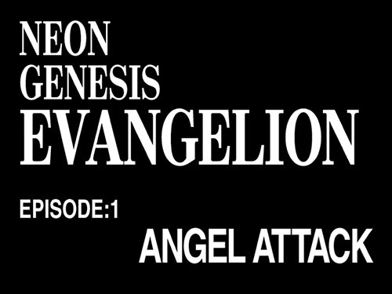

Many typefaces were used throughout Evangelion to leave an impression on
the viewer's minds. To ingrain them into your memory. The
impact of these bold scripts has made it to where you need't look further
than the style of text on a black background to recognize,
this is Evangelion.
some of the rather common fonts used throughout the franchise include:
Matisse EB, a FOT-Matisse family font, was widley used throughout the show in it's sudden on-screen graphics introducing things like time and date, names, events and other things of the such, and more prominently the iconic and easily recogisable Japanese title cards that even act as minimalistic advertising for the franchise today.

Quite a few other fonts were used throughout the production processes as well, the english title cards usually consisted of a "bootleg" version of century school book to create the "NEON GENESIS" logo. While the subtext of the card would be written in Helvetica. Many of these fonts were also mechanically compressed to change their look, which is why you'll notice that even if you do reuse the same fonts on a modern computer you'll be a bit far from the original result.